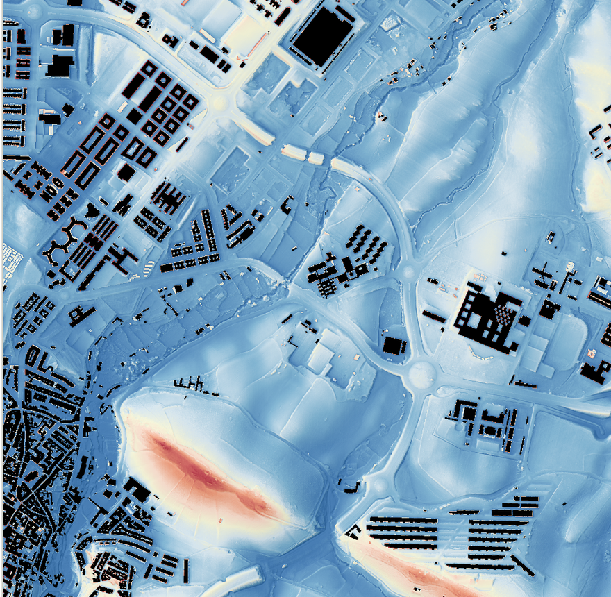
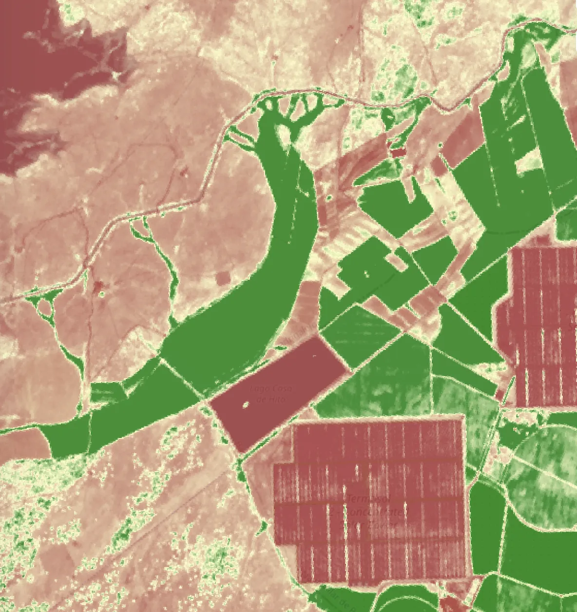
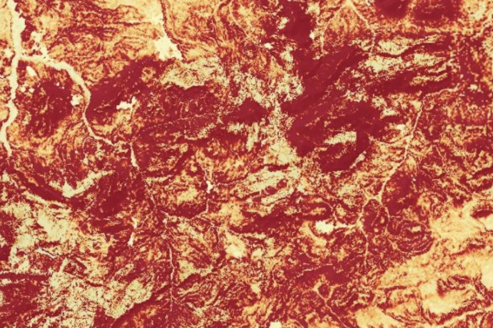

/
Solución · Soluciones para la ciudad
Ponemos los datos al servicio de ayuntamientos y diputaciones: inventarios de arbolado urbano, islas de calor, exposición al viento y visores de territorio que cualquiera en el equipo puede usar.

El problema
Equipos pequeños, sin capacidad para montar y mantener análisis geoespaciales pesados a mano.
Islas de calor, cobertura arbórea y demanda ciudadana obligan a actuar con datos, no con intuiciones.
Informes que acaban en un cajón y nunca se convierten en un plan concreto de actuación.
Del árbol al plan de ciudad



01
Cada árbol identificado y localizado, desde satélite y desde la calle, con su especie y su estado.
02
Superponemos islas de calor y exposición al viento para ver dónde el arbolado hace más falta.
03
Dónde plantar, dónde regar y dónde actuar primero, con criterios claros y comparables.
04
Todo en un visor que cualquiera del ayuntamiento puede usar. Sin GIS, sin código.
Proyectos reales
Visores y plataformas pensados para municipios y diputaciones, con datos que se entienden y se usan cada día.
Inventarios de arbolado urbano cruzados con islas de calor y exposición al viento.
Visor con asistente de IA para análisis de territorio por provincia, sin GIS.

Plataformas y visores a medida para la gestión del territorio municipal.
Qué ofrecemos
Cada árbol localizado y caracterizado, desde satélite y desde la calle.
Dónde se acumula el calor y cómo la vegetación puede rebajarlo.
Herramientas que cualquiera del equipo usa sin ser experto en GIS.
Analizamos viento y confort para diseñar espacios más habitables.
Indicadores claros para seguir el estado del verde urbano en el tiempo.
Datos que puedes compartir con la ciudadanía de forma clara y accesible.
El siguiente paso
Cuéntanos qué necesita tu ciudad: arbolado, calor, viento o un visor de territorio. En una llamada te decimos cómo podemos ayudarte.
Empieza ahora